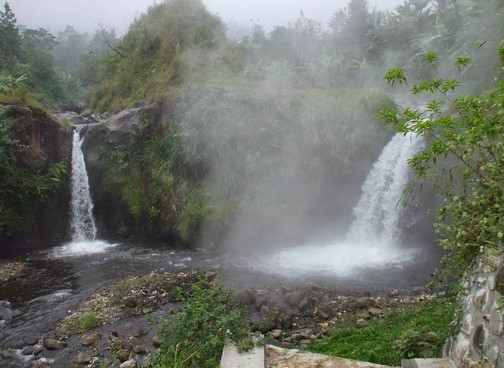

Alamat : Jl. Objek Wisata Guci, Sigedong, Bumijawa, Tegal, Jawa Tengah 52466, Indonesia
Tarif : Mulai dari Rp 4.500- Rp 7.000

Mencoba sensasi pemandian air panas Guci sangat berkhasiat untuk kesehatan kulit.
Pemandian air panas Guci ini termasuk yang paling kenal terkenal di Kota Tegal. Sensasi udara
segar dan hawa yang dingin tentu membuat badan akan semakin releks sehingga
sangat nyaman saat berendam air hangat.
Lokasi pemandian air panas ini tidak mudah, wisatawan harus melewati jalan terjal dan
perbukitan. Meski begitu semua akan terbayar dengan suasana sekitar yang asri dan sejuk
serta pemandangan alam sangat menawan. Sepanjang jalan wisatawan akan disuguhi
dengan pemandangan bukit, sungai serta perkebunan.